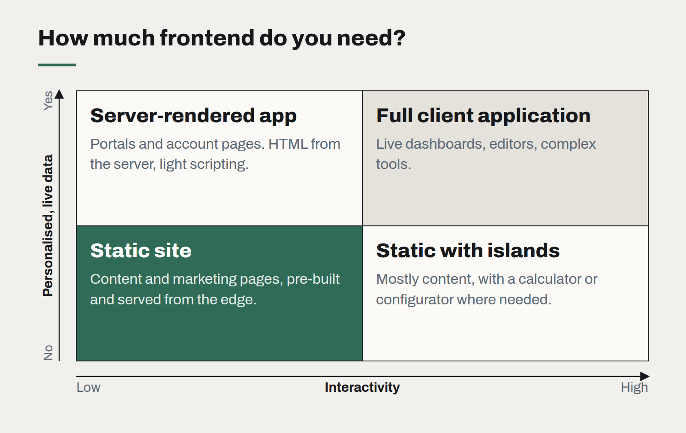

Choosing a frontend framework is mostly choosing a team
The technical differences between mainstream frameworks have narrowed. What still differs is who you can hire, how long the code will be supported, and how much of it you actually need.

Clients still ask us which frontend framework they should use, often expecting a technical verdict. Our honest answer is that, among the mainstream options, the technical differences matter less than they did five years ago. They have converged on similar ideas: components, server rendering, fine-grained reactivity, and a build step that hands the browser less JavaScript than it used to. Any of them can build a fast, accessible, maintainable product in capable hands.
What still differs — and what should drive the decision — is mostly about people and time.
The questions that actually decide it
- Who will maintain it? The framework your current team knows well beats a theoretically better one they would have to learn under deadline. If you will hire, look at who is available locally. In New Zealand the pool for the most popular framework is several times larger than for the alternatives, and that shows up in both hiring time and rates.
- How long must it last? A business application may live ten years. Prefer frameworks with a long record of stable releases, clear upgrade paths and backing that does not depend on one company's changing priorities.
- How much interactivity do you need? This is the question most often skipped. A content site, a marketing site or a simple form-driven tool may need very little client-side JavaScript at all. Server-rendered HTML with small interactive islands is often faster to build, faster to load and cheaper to maintain than a full client-side application.
- What does the rest of your stack look like? A framework that shares a language and types with your backend removes a whole class of integration bugs.

Beware the rewrite motive
The most expensive framework decision is usually not the first one but the second: rewriting a working product because a newer framework is fashionable. Rewrites for this reason almost never pay back. If an existing application is hard to change, the cause is more often its structure — tangled state, missing tests, unclear boundaries — than its framework, and those problems move with the code.
When a change is genuinely warranted, migrate incrementally, one route or one component tree at a time, rather than stopping feature work for a year.
Our default
For most business applications we build, the default is a mainstream, component-based framework with server rendering, TypeScript throughout, and a small, well-maintained component library styled with the client's design tokens. For content-led sites we lean toward static generation with minimal JavaScript. Both defaults are chosen for the same reason: they are easy to hire for, easy to hand over, and unlikely to strand the client in three years.
A framework is not a strategy. The best choice is usually the one your team can use well for the life of the product — and that is a question about your team, not about the framework.
Observability for teams of five
You do not need a platform team to know what your software is doing in production. Four signals, one dashboard and a rule about alerts will cover most of what a small team needs.
Static first: why our own site ships as plain files
No server, no database, no framework runtime — and pages that load before you finish blinking. Static generation is the most underrated architecture for most business websites.
Postgres is the default database, and it should be
Documents, search, queues, vectors for AI retrieval — one well-run Postgres now covers what used to take four products. The reasons to add a second database are fewer than they were.